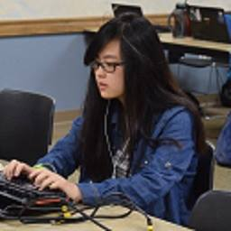

|
 |
 |
 |
 |
|
|
|
|
|
Meet your fellow officers in charge of the club!

|
Aaron "Xenocidel" Liao 4th year, Computer Engineering (Apr. 2015 - Present) 


|
Hi all! I'm Aaron, a computer hardware enthusiast, DIY hobbyist, and eSports fan. I started playing osu! since 2013 and though I have never been musically (rhymically?) inclined, I rather enjoy the game a lot.
Speaking of hardware and DIY, I made a two-key keypad for osu! called "two-K." It was a project that started in April 2015 and involved 3D modelling using SolidWorks, 3D printing, and soldering.
In the rare occasions when I'm not browsing reddit or watching YouTube, I like to play racquetball or build computers for people. Hit me up if you're interested in either of those things :D
-Aaron Liao

|
Justin "Shintomo" Veyna 4th year, Computer Science (Nov. 2014 - Present)
|
Hey all! I entered UCI in the fall of 2014 as first year computer science major. In my free time I like to watch lots of anime, play a whole bunch of different games(Steam games, League of Legends and Overwatch ), and I also like to yoyo. I started playing osu! in 2013 starting out as a mouse only player and gradually switching over to tablet + keyboard. I no longer play osu! actively and reached a peak rank of 9.8k.
-Justin Veyna

|
Kenny "Kenny" Yam 3rd year, Computer Science (May 2016 - Present)
|
Hello, my name is Kenneth Yam. I’m a Computer Game Science major that blundered his way to UCI. I’m a hybrid mouse-and-keyboard player that started with mouse acceleration for 2-and-a-half years. Now that I’m smarter and turned it off, I reached 1.5k as my peak rank in Sep. 2015, but decayed due to school. I play tennis, video games, and violin (woohoo stereotypes). I’m returning to other games like Hearthstone and MapleStory. I don’t watch anime, so don’t ask me for any recommendations. You can show me cool stuff instead.
-Kenny Yam

|
Paxton "Ikillsheep" Wong 3rd year, Computer Science (May 2016 - Present)
|
Hi everyone, I’m Paxton Ngai-Neng Wong, and I’m a Computer Science major at UCI. I’m a tablet and keyboard player (wow such unique) at rank 11.5k as of when this was written- I sucked at DT because I tap like a noob, so I turned into an HR player. My hobbies are being a weab, playing the violin and drawing. I used to do Cross Country and Long Distance Track in high school, so occasionally I enjoy running. I found out about this club from a friend in high school who found out about it on Reddit. I never would have expected to be an officer, but after all the cool experiences I had with the club I decided to become one.
-Paxton Wong

|
Kenneth "Zakkusu41" Legaspi 4th year, Software Engineer (May 2016 - Present)
|
Hey everyone, my name is Matt and I am a third year software engineer. You can also call me Kenneth, Ken, Kenny, Keneth with one “n,” or whatever you feel is appropriate. I don’t really play osu!, so you are probably asking yourself, “Why is he an officer?” Same. A friend of mine found out from a reddit post that there is an osu! club here at UCI, and told me to check it out. Normally I would’ve been gone by the next meeting, but the personalities introduced to me were quite “intriguing.” Next thing I knew, I was at every meeting since fall of 2015. Someone save me. Also, I play a lot of Heroes of the Storm, Smash 4, Fire Emblem, Steam, and more. Feel free to hit me up if you play any of these!
-Kenneth Legaspi

|
Shannon Chen 3rd year, Business Administration (June 2017 - Present)
|
Hello! Shannon here as the can’t-play-osu!-because-i-have-zero-coordination member (so why am I here again?) ha. I’m an uninteresting person, but if you want to get your ear talked off, I can give it my best shot! c: If you went to AX, you might remember me as the overly hyper kid in the corner asking if you’d like a sticker?!
-Shannon Chen

|
Alex "Giraffle" Luu 4th year, Biological Science (June 2017 - Present)
|
Hey everybody! I entered UCI as a first year but I didn't join osu! UCI until my second year. Even though I didn't join until my second year I actually met the president in my first year randomly when I found him soldering keycaps with another officer Aaron. I told him I liked Shibayan Records and he said "Coool." I enjoy playing rhythm games like osu!, Stepmania, DDR, Project Diva!, and SDVX. I didn't officially join until on a whim I checked out the club and played osu!mania. I said osu!standard looked to hard so I didn't want to play it. A few weeks later I bought a tablet.
-Alex Luu
|  |
Benia "DicingDice" Ean 2nd year, Biological Science (June 2017 - Present)
|
Hi everyone, I’m Paxton Ngai-Neng Wong, and I’m a Computer Science major at UCI. I’m a tablet and keyboard player (wow such unique) at rank 11.5k as of when this was written- I sucked at DT because I tap like a noob, so I turned into an HR player. My hobbies are being a weab, playing the violin and drawing. I used to do Cross Country and Long Distance Track in high school, so occasionally I enjoy running. I found out about this club from a friend in high school who found out about it on Reddit. I never would have expected to be an officer, but after all the cool experiences I had with the club I decided to become one.
-Paxton Wong

|
Max "osuuci dot com" Chung Graduated Computer Game Science (Nov. 2014 - Dec. 2015)

|
What's up everyone. I'm Wax Chug da Gwad. Some of you guys may know me as Max Chung. I started playing osu! 3 years ago, but have only been playing it on-and-off as a side game, with months of break in between. It wasn't until last fall quarter that Justin, Brad, and I randomly met up and found out we all played osu!.
Thinking it was a good chance for me to get more serious about the game, meet new people, and try something new, I took the lead in starting up this club and bringing it to where it is now. It's been an absolute blast playing the game with everyone so far, and I hope we grow in numbers and do greater things in the future!
Outside of osu!, I'm an active officer and developer of the Video Game Development Club at UCI. I love making games, and it's thanks to VGDC that I've met a ton of awesome people and have the passion I have now. Big shoutouts to them! If you're at all interested in game development, definitely check them out and get involved.
I watch a fair bit of anime in my free time, not religiously anymore, but still a good chunk here and there, and as a result of anime, osu!, and NicoNico, I listen to a lot of Japanese/anime/vocaloid/utaite music. My favorite animes of all time are The Tatami Galaxy, the first 15 minutes of Redline, and the last 15 minutes of Mind Game. My favorite vocaloid producer is MikitoP, and my favorite song by him is "Sayoko" by Kano.
-Wax "Max 'Shrackner' Chung" Chug da Gwad

|
Victor "lalipo" Stolle Graduated Software Engineering (Apr. 2015 - Nov. 2015)
|
Hello there! My name is Victor Stolle, and I am a 3rd year Software Engineering student. I started playing osu! 3 years ago when Max introduced this difficult rhythm game in between queues of League of Legends.
In osu! my average song difficulty is between 3-4 stars, and I play with the traditional mouse + keyboard setup. My favorite genres of music in the game are fast-paced, high BPM songs belonging to either electronic or rock.
Other than osu! I am a somewhat-active member of the Video Game Design Club, a member of the intramural water polo team, and a video game enthusiast. I play a lot of League of Legends and Diablo 3, and my favourite strategy game is Age of Empires 3. I also watch "a little bit" of anime every now and then, and listen to all genres of music.
-Victor Stolle

|
Jimmy "Jim" Zhang Graduated Psychology (Mar. 2015 - June 2016)
|
I'm Jimmy and I'm a 4th year Psychology student. I'm the only non-STEM major in the club which is either a blessing or a curse depending on how you look at it. Last year I handled mostly social media, promotion, and tournament organization in the club. This year I still have the same responsibilities but I'm also filling in as the President following Max's graduation. I'm big on cooking, mechanical keyboards, swimming and sleep. I used to be a much more active osu! player, capping out at the high 8k's, but due to school keeping me out of practice I've been unable to maintain my rank or speed. Unfortunately I can't play DT anymore but I've recently found much more enjoyment in slowing it down with some No Mod. Nowadays I use osu! primarily as a means to get new music and "enjoying game". I'm still notoriously bad at streaming and I'm probably the least consistent player I know. I'm still more of a jump map player but I'm slowly warming up to more technical maps as my reading improves. My favorite maps nowadays include World's End, Girl's Rondo (P A N's difficulty), Sakura No Uta (Alyce's difficulty) and Akatsuki Zukuyo. I'm a pretty active League of Legends player as well, you can find me under the ign Jims, hit me up sometime and let's play!
-Jimmy Zhang

|
Royce "TheWeirdo9" Sato Graduated Chemical Engineering (Aug. 2015 - June 2017)
|
Hi, I'm Royce Sato, a third year chemical engineering student. I started playing osu! around Fall 2013, and I haven't improved since then. I play mouse+keyboard; I used to play tablet, but my hand couldn't take the heat, so I stick with mouse. I don't DT farm. I also play mania 4k, it's really fun and everyone should quit standard and play mania. Other hobbies include playing the piano, yo-yoing, which Jimmy and Justin got me into, and speedcubing. I'm also eternally “studying” Japanese.
-Royce Sato

|
Bradley "mauler68" Shood 4th year, Computer Science (Nov. 2014 - June 2017)
|
こんにちは fellow osu! players! My name is Bradley (Brad) I graduated from Leigh High School in San Jose and came to UCI to study Computer Science.
I used to have a lot of interest in games, but after discovering the glorious nippon I didn't have time for them anymore. I knew about osu! since May 2014 and I thought the concept of the game was pretty cool; though I didn't really take the game seriously until the start of Fall 2014.
My friend/roomate/other club officer (Justin) was actually pretty good at the game, and watching him play motivated me to try and git gud. Besides osu!, other things I do for fun involve technology and Japanese media.
-Bradley Shood